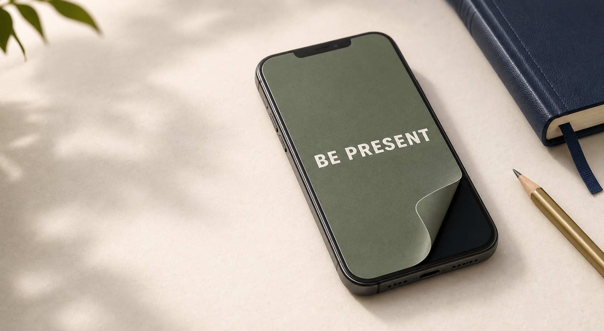

Studying
Set your phone to Do Not Disturb, cover the screen, and keep your attention on the page, laptop, or problem in front of you.
Be Present Patch is a removable sticker that covers your phone screen when you need to focus. Put your phone on Do Not Disturb or turn it off, place the patch over the screen, and give yourself a physical reminder not to pick it up.

The patch gives your intention a physical shape. It is simple enough to use anywhere, but visible enough to interrupt the habit loop.
Set your phone to Do Not Disturb, cover the screen, and keep your attention on the page, laptop, or problem in front of you.
Stay in the room instead of checking notifications, filming every second, or drifting into the feed between songs.
Place the patch before the conversation starts and make your phone feel less available without locking yourself out completely.
Enjoy the ceremony, speeches, and dance floor without a glowing rectangle pulling you away from the people you came to celebrate.
Use it before writing, planning, reading, building, or practicing when airplane mode alone does not feel like enough.
Cover the screen at night to make one more scroll feel like a deliberate choice instead of an automatic reflex.
Be Present Patch works because it adds friction at the exact moment distraction usually wins. You can remove it when something truly matters, but the extra step gives you a chance to choose.
Turn on Do Not Disturb, silence alerts, or power the phone down before a study block, dinner, ceremony, or show.
Place the patch over the display so the phone becomes a reminder instead of a bright invitation.
If you need to make a call or check something important, remove it cleanly and put it back when you are done.
Choose a color, phrase, or design that matches the moment. A patch for finals week can look different from one for date night, a concert, or a wedding weekend.
Join the early list for launch updates, first-run designs, and customizable patch options.